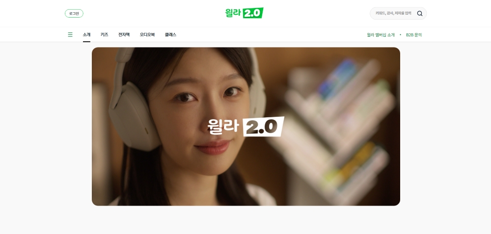
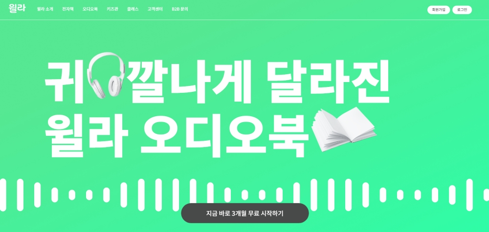
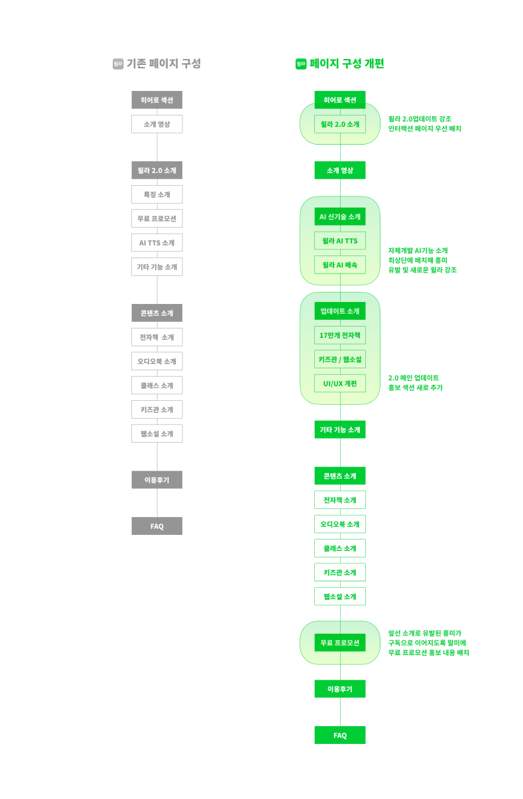
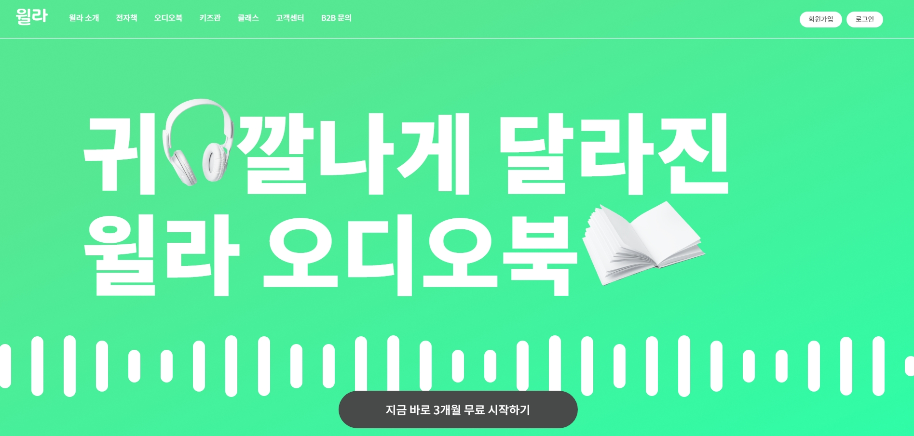
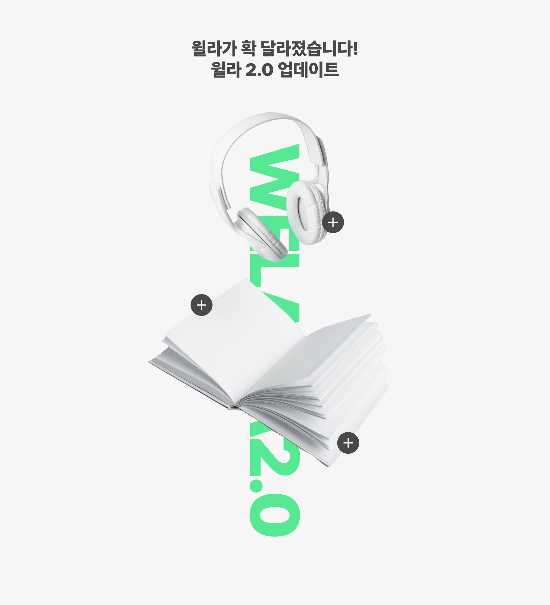
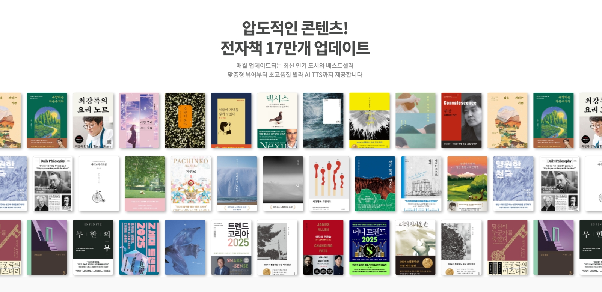
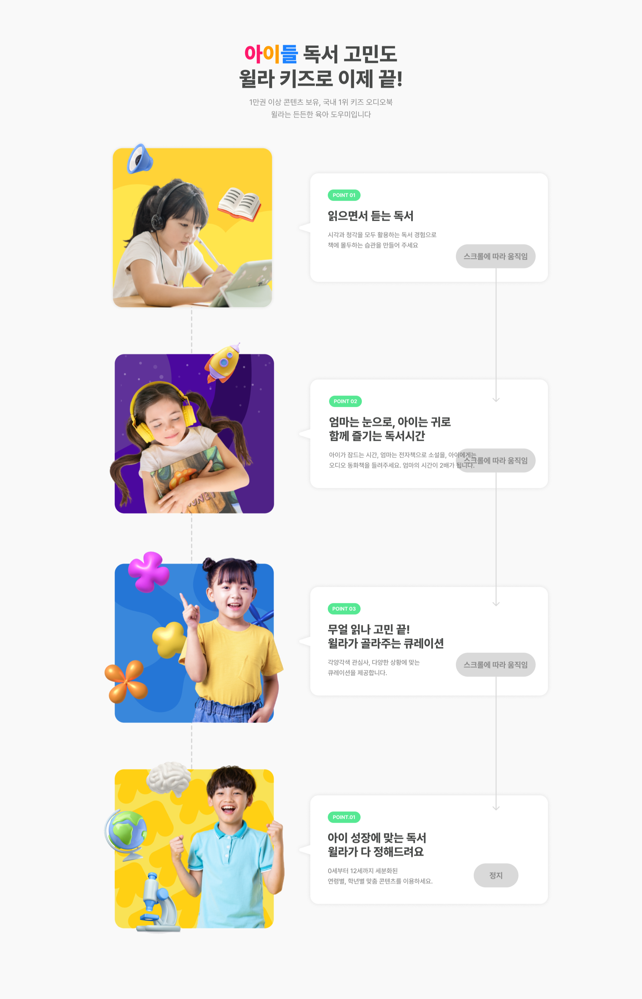
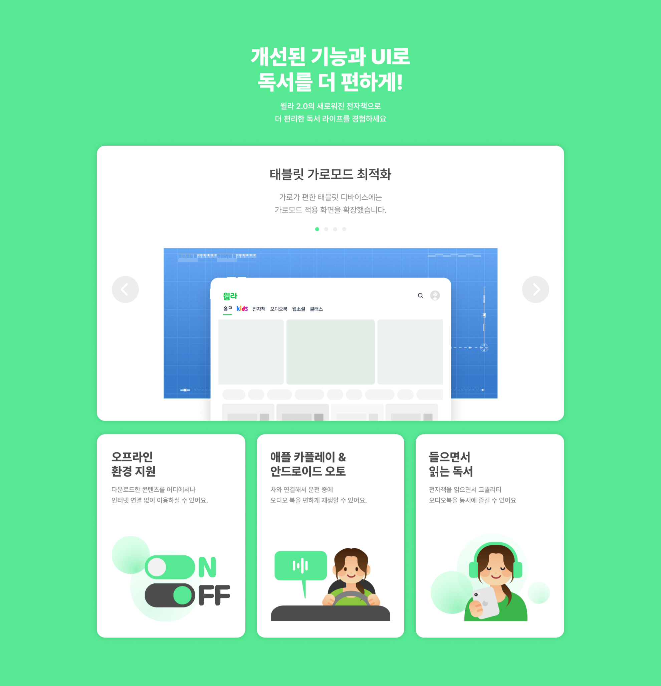
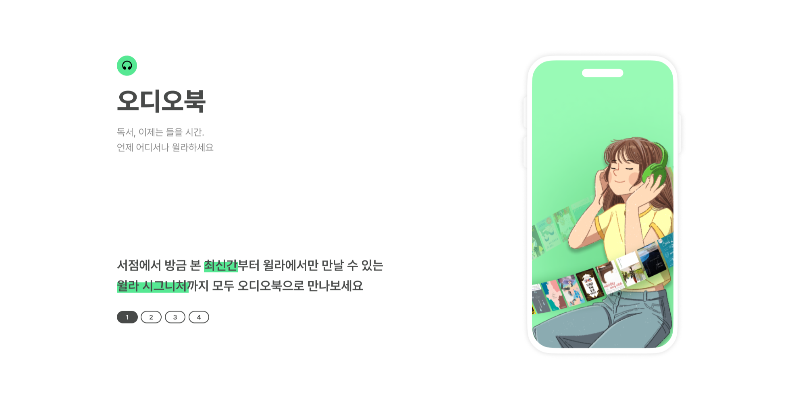

국내 최대 오디오북 플랫폼 윌라의 '2.0 업데이트'
홍보를 위한 인터랙티브 프로모션 웹 리디자인


마우스를 위에 올려 리디자인 이전 이미지를 확인해 보세요
IA REDESIGN
페이지 구성을 개편하여 윌라 2.0 업데이트를 강조하고 새로운 기능을 보다 더 어필할 수 있도록 재구성하였습니다.
AI 신기술 소개 섹션과 업데이트 소개 섹션을 추가해 새롭게 달라진 윌라를 자세하게 살펴볼 수 있습니다. 마지막 부분에는 구독 프로모션 섹션을 배치하여 자연스럽게 윌라 서비스 구독으로 이어질 수 있도록 하였습니다.

HERO SECTION
히어로 섹션에서는 타이포그래피와 인터랙션을 활용해 사용자의 흥미를 유발할 수 있도록 과감하게 리디자인하였습니다. '귀깔나게 달라진 윌라 오디오북'이라는 문구를 이용해 타이포그래피를 제작하였고, CSS를 활용해 음파가 움직이는 애니메이션을 배경에 넣었습니다.

INDEX
인덱스 섹션에서는 윌라 2.0 주요 업데이트 내용을 간략하게 살펴볼 수 있습니다. 버튼 위에 마우스를 올리면 주요 업데이트 내용이 나타나도록 하고, 클릭하면 해당 섹션으로 이동하도록 하였습니다. 또한 CSS와 Js를 활용하여 헤드폰과 책이 공중에 떠 있는 듯한 인터랙션을 주어 사용자가 흥미를 느낄 수 있도록 했습니다.

AI TTS
윌라 2.0의 주요 업데이트 내역 중 하나인 AI 기능을 소개하는 섹션입니다. 동영상을 플레이어를 통해 사용자가 직접 AI기능을 체험해볼 수 있습니다. 하단에는 AI TTS 기능 설명을 카드 형식으로 일러스트와 함께 배치하였습니다. 카드에 마우스를 올렸을 때 카드가 3D로 Tilt되어 이목을 끌 수 있도록 JS 에셋을 활용하였습니다.
SCROLLING BANNER
무한 스크롤링 배너를 활용해 '윌라의 압도적인 콘텐츠'를 시각적으로 나타내었습니다.

KIDS
GSAP의 ScrollTrigger 기능과 JS코드를 활용해 사용자의 스크롤링에 맞추어 말풍선의 내용이 바뀌는 인터랙션을 제작하였습니다. 윌라 2.0에 새롭게 추가된 키즈관에 대한 설명을 한눈에 확인할 수 있습니다.

UI & FUNCTION
윌라 2.0에서 새롭게 달라진 UI와 기능을 추가로 설명하는 섹션입니다. Swiper를 통해 UI 개편안을 넘기며 살펴볼 수 있습니다. 또 하단에는 AI TTS 기능 설명을 카드 형식으로 일러스트와 함께 배치하였습니다. 카드에 마우스를 올렸을 때 카드가 3D로 Tilt되어 이목을 끌 수 있도록 JS 에셋을 활용하였습니다.

CONTENT
윌라 2.0 서비스에서 제공하는 콘텐츠를 한눈에 볼 수 있는 섹션을 Swiper를 통해 제작하였습니다.

PROMOTION
윌라 구독료 0원 무료체험과 월간, 연간 구독 할인 내용을 홍보하는 섹션입니다. JS를 활용해 3D 그래픽 오브젝트가 공중에 떠 있는 듯한 애니메이션 효과를 주었습니다.